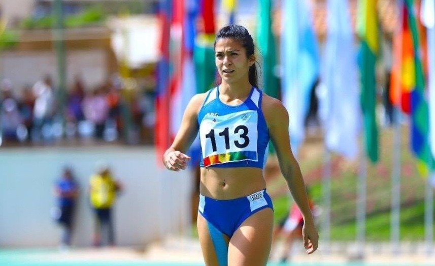

Amateur
Utiliza la carrera como un medio de disfrute y satisfacción personal, realizando entrenamientos más o menos estrictos para conseguir objetivos aleatorios o prefijados, los cuales le servirán como un medio de motivación para seguir corriendo.
Acceder

Élite
Siempre busca un rendimiento deportivo para llegar a conseguir unos objetivos muy exigentes que, por lo general, le permitirán ganarse la vida con esta actividad a través de premios por resultados, becas, patrocinios…
Acceder